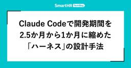
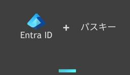
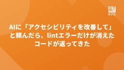
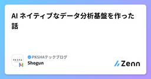
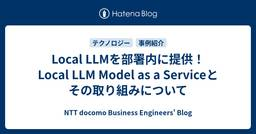
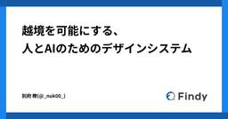
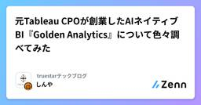
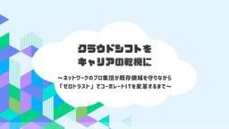

直近1週間の人気フィード
はてなブックマーク数を元に新着優先で並べ替え

緊急で社内Jev勉強会を開催したらアイデアがバンバン出て頭が柔らかくなった 320
320 LayerX エンジニアブログ
LayerX エンジニアブログ
こんにちは。バクラク事業部でエンジニアをしているpon)です。 社内で TypeSafe AI の Jev を題材にした勉強会を開催し、社内のエンジニアが50人以上参加してくれました！ 30分の短い会でしたが、終わってみるとサービスにJevを組みこむアイデアが50件を超えました。この記事では、なぜわざわざ勉強会という形にしたのかと、そこで何が出てきたのかを紹介します！ なぜ勉強会にしたのか 私が、
1日前

Claude Codeで開発期間を2.5か月から1か月に縮めた「ハーネス」の設計手法 277 SmartHR Tech Blog
SmartHR Tech Blog
こんにちは。SmartHRの情シス領域でプロダクトエンジニアをしているaniです。 入社して3か月が経ちました。この3か月で取り組んだのは、情シスプロダクトに新しい機能を1つ追加する開発です。まだ世に出していない機能なので、以降は「今回の機能」と書きます。当初の見積もりは実質工数でおおよそ2.5か月ほどでしたが、Claude Code向けの「ハーネス」を先に作ってから開発を始めたところ、大きな手戻
4日前

パスキーは破られていないのに突破される——デバイスコードフロー攻撃とEntra IDでの対策 122 APC 技術ブログ
APC 技術ブログ
目次 目次 はじめに パスキーとは サインインの仕組み Entra IDでのパスキー対応について パスキーが突破されること：デバイスコードフロー攻撃 デバイスコードフローとは 攻撃のメカニズム デバイスコードフロー攻撃の対策 Entra IDの条件付きアクセスによるブロック 除外設定が必要なケース Microsoft Entra ID Protectionによる、万が一の不正アクセス検知 結びに
3日前

WebMCPを試してみた感想。フロントエンドの必須技術になりそうな予感。 93 chot Inc. tech blogのフィード
chot Inc. tech blogのフィード
弊社には「Orizm」という自社プロダクトのCMSがあり、現在私はOrizmを用いたWebサイトの開発業務を担当しています。Orizmには「デザインエディター」という、Webページを見た目そのまま直感的に編集できる機能が組み込まれているのですが、入稿作業をしながら、ふと「ここにWebMCPを組み込んだらより便利になるのでは？」と考えました。本来は人間が操作するためのGUIツールですが、AIエージェ
2日前
「全員未経験」からのVibe Coding —— 1行も書けなかったチームが、当たり前のように社内アプリを作っている話 71 MonotaRO Tech Blog
MonotaRO Tech Blog
はじめに テックオペレーショングループについて メンバーについて イメージからアプリを生み出す「Vibe Coding」 AI時代の開発における「問い」 Vibe Codingに向けた実践的学習 STEP 1: 学習の基盤となるマインドセット STEP 2: IT基礎概念とCLI STEP 3: Gentoo Linuxでのハンズオン STEP 4: Git/GitHub と AIツールの実践 S
3日前

BigQueryのスロット、返し忘れていませんか? fluid scalingによるスロット費用最適化 28 エムスリーテックブログ
エムスリーテックブログ
エムスリーでは、BigQuery EditionsでAutoscalingを使っています。BigQueryのスロットは使った分に応じて課金されると思いがちですが、厳密には確保したスロットに応じて課金されます。BQのfluid scaling機能を有効化すると、確保したスロットを素早く解放でき、費用の最適化につながります。この記事では、BigQuery のスケーリングの仕組み、何に対して課金されてい
1日前

AIに「アクセシビリティを改善して」と頼んだら、lintエラーだけが消えたコードが返ってきた 26 RAKUS Developers Blog | ラクス エンジニアブログ
RAKUS Developers Blog | ラクス エンジニアブログ
こんにちは。ラクスのフロントエンド推進課の亀ノ上です。 Webアクセシビリティは、2022年のチームの課題棚卸しで私が挙げたテーマです。その後もR&Dの取り組みとして続けてきましたが、期日のある機能開発と並べると優先順位は後ろになり、着手には至っていませんでした。 今回、エンドユーザー向けの公開画面を持つ機能の開発で、Webアクセシビリティが要件になりました。対応を進める中で作ったのは、Webアク
1日前

AI ネイティブなデータ分析基盤を作った話 43 PKSHAテックブログ のフィード
はじめにPKSHA Technology で PKSHA VoiceAgent（以下 VoiceAgent）の SRE をしている三浦です。2026 年 2 月に入社しました。本記事は、データ分析基盤を構築した話です。データ分析基盤自体はもはや珍しいものでもありませんが、2026 年現在に相応しい手法と構成でできたのではないかと自負しています。VoiceAgent では、データ量の増加とともに分析
2日前

SPAを丸ごと差し替えながら、画面単位で新基盤へ引っ越した話 24
 freee Developers Hub
freee Developers Hub
こんにちは。freee販売のエンジニアをやっているshuchanです。 この記事では、数年かけて育ってきたReact製の画面を、止めずに、かつ機能追加を続けながら、新しいフロントエンド基盤へ引っ越している話を紹介します。 フレームワークのバージョンアップではなく、「ディレクトリ構成・router・データフェッチ・スタイリング・テスト基盤をまとめて別物に差し替える」という、ほぼフルリメイク的な移行で
1日前

楽楽明細における、障害対応時の動き方の話 35 RAKUS Developers Blog | ラクス エンジニアブログ
こんにちは。楽楽明細の開発をしている者です。 運用目線での顧客視点として、障害対応の話を書こうと思います。 障害が起きたとき、私が頭の中でどういう順番で何を判断しているのか。それを文章にしてみます。 はじめに 前提になる楽楽明細の事情 私の動き方 まず騒ぐ 何が起きているかをざっと把握する 顧客への影響を見極める 止血が要るかで動きを分ける 原因調査で意識していること そのケースがなぜ起きたかを追
2日前
Starlinkの航空機利用、国際線のIPアドレス変化を追う 15 IIJ Engineers Blog
IIJ Engineers Blog
僕の従兄弟はプロゲーマーの「ときど」選手です。彼は仕事柄、世界中の大会に参戦するわけですが、最近はStarlink搭載の航空機に乗る機会もあるようです。そこでIPアドレスを記録できるスマホを用意してデ...
1日前

Claude Code Routinesを用いてIssueを自動で解消する仕組みを展開した話 46 RAKUS Developers Blog | ラクス エンジニアブログ
はじめまして。昨年新卒として株式会社ラクスに入社し、現在はHRソリューション開発部楽楽勤怠開発課でバックエンドエンジニアをしているmurosyoです。普段は楽楽勤怠の機能開発を担当しています。開発本部が掲げる『顧客に価値を高速提供できるAIネイティブな開発組織への変革』というビジョンのもと、ClaudeのSkillsやAgentsなどを整備・展開しています。 今回は、私がチームに導入を試みた「Cl
3日前

フロントエンドなんてバイブコーディングで良いこの時代に、私は 136 カミナシ エンジニアブログ
カミナシ エンジニアブログ
カミナシでソフトウェアエンジニアをしている osuzu です。 「フロントエンドエンジニアとしてのキャリアは終わりなのではないか」という話を、最近よく見かけるようになりました。AIが画面実装を担えるようになった今、フロントエンドを主戦場にし続ける意味があるのか、という問いです。 正直に言うと、私も同じ方向に舵を切っています。ここ1、2年で最も時間を使っているのはデータモデリングやバックエンド、非同
6日前

Local LLMを部署内に提供！ Local LLM Model as a Serviceとその取り組みについて 134 NTT docomo Business Engineers' Blog
NTT docomo Business Engineers' Blog
こんにちは、イノベーションセンターの福田です。 普段はAIエージェントの検証や開発と、チーム内資産のDevOpsに取り組んでいます。 コーディングエージェントの普及によって、LLMは日々の開発で欠かせない道具となりました。 その多くはクラウド型のサービスを通じて利用されており、高性能なモデルをすぐに使える環境が整っています。 同時に、日々の開発で常用するものだからこそ、扱うデータや利用の実態を自組
5日前

【Stan】階層ベイズモデリングを用いた生存時間分析で意思決定をした時の話 9 レバレジーズ データAIブログ
レバレジーズ データAIブログ
データ戦略室で室長をしている阪上です。弊社のデータサイエンティストの求人情報には技術スタックとして、Stanを記しておりましたが、正直なところ、ここ最近はStanを用いた統計モデリングを行っておりませんでした。そんな中、ふと求人情報にあるStanという記述に熱い想いを持たれるかたへのアンサーソングというか、過去の取り組みを紹介したいなと思いました。そこで、自分がデータ戦略室を設立する前に行っていた
1日前

次の登壇者は君だ！正しい情報の調べ方、知っていますか？Go Conference 2026で「Go探無比（gotan）」を開催しました 9 ANDPAD Tech Blog
ANDPAD Tech Blog
「このGoコードは、なぜこう動くのだろう？」 生成AIに尋ねれば、疑問への答えはすぐに返ってきます。けれど、その回答が本当に正しいのか、ハルシネーションではないのかを確かめなければ、自信を持って誰かに説明できません。 一次情報を自分の目でたどり、実際の挙動と照らし合わせる。そうして、正しいと自信を持って答えられる状態を目指すのが、今回のワークショップです。 2026年9月11日（金）、Go Con
2日前

DroidKaigi 2026 参加レポート 15 Mirrativ Tech Blog
Mirrativ Tech Blog
この記事は、DroidKaigi 2026 の参加レポートになります。 Androidエンジニアのけい(@kei_1111_)です。9月1日〜3日に DroidKaigi 2026 が開催されました。ミラティブは2022年から DroidKaigi に協賛しており、今年で5年目となります。 Event Day から Conference Day まで、3日間すべて参加してきました。 DroidKa
3日前

SRv6 uSID TI-LFAを検証してみた 14 NTT docomo Business Engineers' Blog
本記事では、ネットワークに障害が発生した際に高速迂回する技術であるTI-LFA (Topology Independent Loop-Free Alternate) の検証結果について紹介します。TI-LFAとは、Segment Routingを組み合わせて事前に計算したBackup pathを使って、任意のトポロジーで障害の高速迂回を実現する技術です。今回は、Segment Routingとして
3日前

プロダクトエンジニアに必要な「いい感じ」に作る能力 22 DRESS CODE TECH BLOGのフィード
はじめにこんにちは。DRESS CODE 株式会社でプロダクトエンジニアをしている西銘です。2026 年 9 月 4 日に開催された Product Engineering Conference 2026 のスポンサーランチセッションで、「プロダクトエンジニアに必要な"いい感じ"に作る能力 〜たくさん作れる時代に、どこまで作るかの決め方〜」というテーマで登壇しました。資料は次のとおりです。http
3日前
障害対応で Claude Code に調査を任せてみたら便利だった話 46 Feedforce Developer Blog
Feedforce Developer Blog
おはようございます。インフラ担当の杉内です。 先日、本番の Aurora PostgreSQL で writer インスタンスの内部プロセスが異常終了するインシデントがありました。RDS が自動でフェイルオーバーを実行し、すぐに writer に切り替わって DB 自体は復旧しました。ただ、切り替わりの瞬間に走っていたバッチ処理が道連れになり、ロックを握ったまま中断したものを手で解除する必要があり
4日前

チームの振る舞いをテストする - Ratcheting パターンで技術的負債解消の後戻りを防ぐ 40 HERP TechHub
借金は、返すこと以上に新たに借りないのが重要である。技術的負債でも同様で、解消が大変なことはもちろんだが、それ以上に解消したはずの負債が知らないうちに積み増されるのが一番キツい。誰かが地道に前に進
5日前
チームの振る舞いをテストする - Ratcheting パターンで技術的負債解消の後戻りを防ぐ 40 HERP TechHub
借金は、返すこと以上に新たに借りないのが重要である。技術的負債でも同様で、解消が大変なことはもちろんだが、それ以上に解消したはずの負債が知らないうちに積み増されるのが一番キツい。誰かが地道に前に進
5日前

越境を可能にする、人とAIのためのデザインシステム 59 Findy Tech Blog
Findy Tech Blog
こんにちは！CTO室でエンジニアをやっている別府(@_nuk00_)です！ 今回の記事では、AIがデザイン案を自動で作成する時代に、なぜ管理コストのかかるデザインシステムを作ったのか。その理由と、デザインシステムの中身を紹介します。 記事は前編と後編の2つに分けています。 前編にあたるこの記事では、土台となる「人とAIが協働するデザインシステムの作り方」を紹介します。 後編では、その土台の上でモッ
6日前

元Tableau CPOが創業したAIネイティブBI『Golden Analytics』について色々調べてみた 25 truestarテックブログのフィード
2026年04月、米国で『Golden Analytics』という新しいBIプロダクトがアーリーアクセスとして公開されました。創業者はTableauでChief Product Officer(CPO)を7年以上務めたFrancois Ajenstat氏です。日本語での情報はまだほとんどないので、「AIを後付けするのではなく、AIを中核に据えて設計したBI」というこの製品の主張が、日本でも気になる
5日前

なぜ悪性パッケージは届いてしまうのか、パッケージレジストリの対策の歴史から考える 29 GMO Flatt Security Blog
GMO Flatt Security Blog
はじめに こんにちは。GMO Flatt Security株式会社 セキュリティエンジニアの井手(@st98_)です。 2026年に入ってから、パッケージレジストリを狙ったソフトウェアサプライチェーン攻撃のニュースが多数ありました。3月には axios や LiteLLM、4月には Bitwarden CLI、5月には TanStack、6月には Red Hat の namespace、そして8月
6日前

DroidKaigi 2026 参加レポート ― コミュニティがあることのありがたさ 14 ドワンゴ教育サービス開発者ブログ
ドワンゴ教育サービス開発者ブログ
こんにちは！株式会社ドワンゴ教育事業本部で、学習アプリ「ZEN Study」の Android アプリ開発を担当している Pon です。 2026年9月1日から3日にかけてベルサール渋谷ガーデンで開催された、Android 開発者のためのカンファレンス「DroidKaigi 2026」に参加しました。 2019年頃に Android アプリ開発を始めてから、DroidKaigi には開催のたびに参
5日前

Playwrightの失敗サマリーからDatadogのトレースを探せるようにしてみた 3 LayerXのフィード
はじめにLayerXのエンタープライズ向け生成AIプラットフォームAi Workforceでは、Playwrightを使ったE2EテストをGitHub Actionsで実行しています。テストが落ちたとき、エラーメッセージやスクリーンショットを見ながら、まずテストコードに問題がないか確認します。そこまで調べて「テスト側の問題ではなさそうだな」と思ったあと、QAのみなさんはどうしていますか？切り分けと
3日前

検算ハーネス：AI にも人にも、正しさを判定させない 20 ENECHANGE Developer Blog
ENECHANGE Developer Blog
こんにちは。ENECHANGE エンジニアの石橋です。 AI にコードを書かせる速度は上がりました。しかし、それが正しいかを確かめる速度は上がっていません。 本記事で考えたいのは、次の問いです。 生成されたコードの正しさは、誰が判定するのか。
7日前

速報: Rails 8.1.3.1アプリをRuby 4.0.7にアップデートしたらJSONデコードでエラー 10 TechRacho
TechRacho
現象 Ruby 4.0.7がリリースされました 自分のRails 8.1.3.1アプリで、Rubyバージョンを先ほどリリースされたRuby 4.0.7↑にアップグレードし、bundle update --all --cooldown 0を実行したところ、json gemが2.21.2から3.0.2へ更新されました。 アプリ内でActiveSupport::JSON.decodeが呼び出されると、A
4日前

LLMにWikiを書かせて半年、一番役に立った画面はLLMの文章を使っていなかった 3 レスキューナウテックブログのフィード
はじめに個人開発で自分専用の記録ツールを作っています。購読しているフィードを読むRSSリーダー、気になったWebページのURLを放り込むと本文を取得して要約とタグ付けを行うクリップ、バレットジャーナル(箇条書きで日々を記録していく日記のようなもの)。用途はバラバラですが、どれも「あとで見返すために残しておく」ためのものです。使い続けていると、当然記録が溜まります。そうなると、これで何か面白いことが
3日前
サイボウズの開発組織コンテンツまるわかり ― 開発組織ブランドアワード2026をきっかけに 3 Cybozu Inside Out | サイボウズエンジニアのブログ
Cybozu Inside Out | サイボウズエンジニアのブログ
こんにちは！サイボウズの開発広報のhokatomo（@tomoko_and）です。 この度、日本CTO協会が発表した「開発組織ブランドアワード2026」で、サイボウズは6位となりました！このように評価していただき光栄です。 調査方法やランキングの詳細は、日本CTO協会のプレスリリースをご覧ください。 cto-a.org 普段のプロダクト開発や組織づくり、それを社外に伝える発信が「サイボウズの開発組
3日前

Insight Edgeで新卒データサイエンティストとして働く — 入社5か月で気づいた3つのこと 3 Insight Edge Tech Blog
Insight Edge Tech Blog
はじめに こんにちは。2026年4月にInsight Edge（以下、IE）へデータサイエンティストとして新卒入社した田中です。 本記事を執筆している2026年9月時点で、入社から約5か月が経ちました。新卒データサイエンティスト（DS）の2期生として、新卒研修から最初の案件への参画までを経験する中で、入社前には見えていなかったIEの特徴が少しずつ分かってきました。本記事では、実際に働いて感じたこと
4日前

クラウドシフトをキャリアの転機に～ネットワークのプロ集団が既存領域を守りながら「ゼロトラスト」でコーポレートITを変革するまで～ 10 ぐるなびをちょっと良くするエンジニアブログ
ぐるなびをちょっと良くするエンジニアブログ
こんにちは、ぐるなびでインフラ（メインはネットワーク）とコーポレートITを担当しているTsushimaです。 商用インフラのクラウド化を転機とし、ネットワークエンジニアの強みを「ゼロトラスト推進」へと展開したマネジメントの意思決定プロセス、既存事業の品質を死守しながら、中途や異動メンバーと融合し、コーポレートITを変革していく泥臭い組織づくりのリアルをお伝えします。
5日前

営業がClaude Codeを半年使い倒したら、チームの働き方が変わった話 — 非エンジニアのAIファースト実践記 7 Insight Edge Tech Blog
非エンジニアの営業がClaude Codeを半年活用。フォルダ設計・会議文字起こしの自動ナレッジ化・HTML資料生成・チーム展開まで、AIファーストの実践を失敗談込みで時系列に公開します。
6日前

AWS SSM Agent の脆弱性(CVE-2026-89049) の被害があったかどうかを CloudTrail で確認する方法 5
株式会社サイバーセキュリティクラウド テックブログのフィード
どうもサイバーセキュリティクラウドで脅威インテリジェンスをしている西川です。今日は表題の CVSS v3.1 における CVSS 9.9(Critical) の脆弱性について実際に脆弱性が悪用された場合にどういうログが CloudTrail に出るのかを検証し、皆様の環境で被害が発生していないか確認していただくためにブログを執筆いたしました。ただこのスコアほど影響度は高くないというのが個人的な印象
6日前

現場のリアリティから全体最適を導く。カケハシがPrincipalを置いた理由 3 KAKEHASHI Tech Blog
KAKEHASHI Tech Blog
2026年7月、カケハシに「Principal Engineer」と「Principal Data Scientist」が新設されました。現場に居続けながら全社の技術課題に向き合う3人に、役割の中身とこれからを聞きました。
5日前

セガの技術本部とは？“技術で支える”ってこういうことなんだな、の話 4 SEGA TECH Blog
SEGA TECH Blog
こんにちは。セガCTOの矢儀です。私はセガ・アトラスをはじめとしたセガグループの技術相談を受けるお仕事や、対外的な技術の窓口をしています。今回は私の所属するセガの技術本部を紹介します。
6日前

AI エージェント時代のゼロトラスト認可を実現するためのポリシーエンジン OPA・Cedar・OpenFGA を使ってみる 3 弁護士ドットコム株式会社 Creators’ blog
弁護士ドットコム株式会社 Creators’ blog
AI エージェント時代のゼロトラスト認可を実現するためのポリシーエンジン OPA・Cedar・OpenFGA を使ってみる こんにちは。弁護士ドットコム株式会社でエンジニアをしている井出です。 AI エージェントが Web を検索し、コードを書き、MCP 経由で社内 API まで叩くようになりました。とても便利になった一方で、ふと不安になりませんか。そのツール実行、本当に許可して大丈夫なのでしょう
6日前